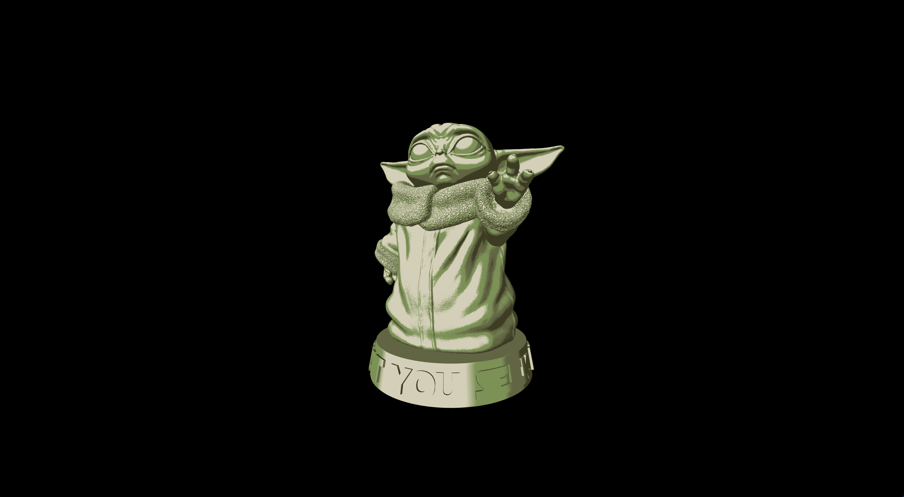

GLSL NPR Toon Shaders
Genevieve Del Prete
CS184 - UC Berkeley Summer 2020
Abstract
Technical Approach
Problems Encountered
Lessons Learned
Results
Toon/Cel Shader



Noir Shader


"Hope" Shader


References
Contributions
It was a one woman show.